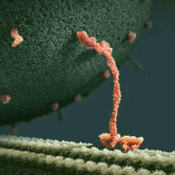

The cytoskeleton of a neuron provides structural support and plays a key role in transporting materials throughout the neuron. It is composed of three main types of structures that contribute to the shape, stability, and functionality of the neuron: microtubules, neurofilaments, and actin filaments.
Microtubules are long, hollow tubes made of repeating subunits of alpha- and beta-tubulin. These subunits assemble in a helical structure, giving microtubules rigidity and strength, similar to an I-beam in architecture. Their rigid, tube-like structure supports the axon's shape and also provides tracks for the transport of organelles, vesicles, and other materials along the axon. The polarity of microtubules, with plus and minus ends, is critical for directional transport, facilitating the movement of cargo toward or away from the axon terminal via motor proteins like kinesins and dyneins.
This GIF shows a kinesin motor protein walking along a microtubule, transporting cellular cargo toward the axon terminal.
Neurofilaments are intermediate filaments that have a rope-like structure, composed of long, fibrous proteins twisted together like strands of a cable. This ropey configuration provides mechanical strength and resilience, helping to maintain the axon's diameter and withstand stretching forces along long axons. Neurofilaments are essential for the structural integrity of the neuron, ensuring proper signal transmission over extended distances by stabilizing the axon.
Actin filaments are composed of small, globular subunits (G-actin) that assemble into long, thin, and flexible helical chains (F-actin). These filaments are much thinner than microtubules or neurofilaments, allowing them to be highly dynamic and flexible. Actin's structure enables it to play a key role in neuron movement, particularly in the growth of axons and dendrites during development or repair. In synapses, actin filaments assist in the formation and remodeling of synaptic structures, which is important for synaptic plasticity and neural communication.